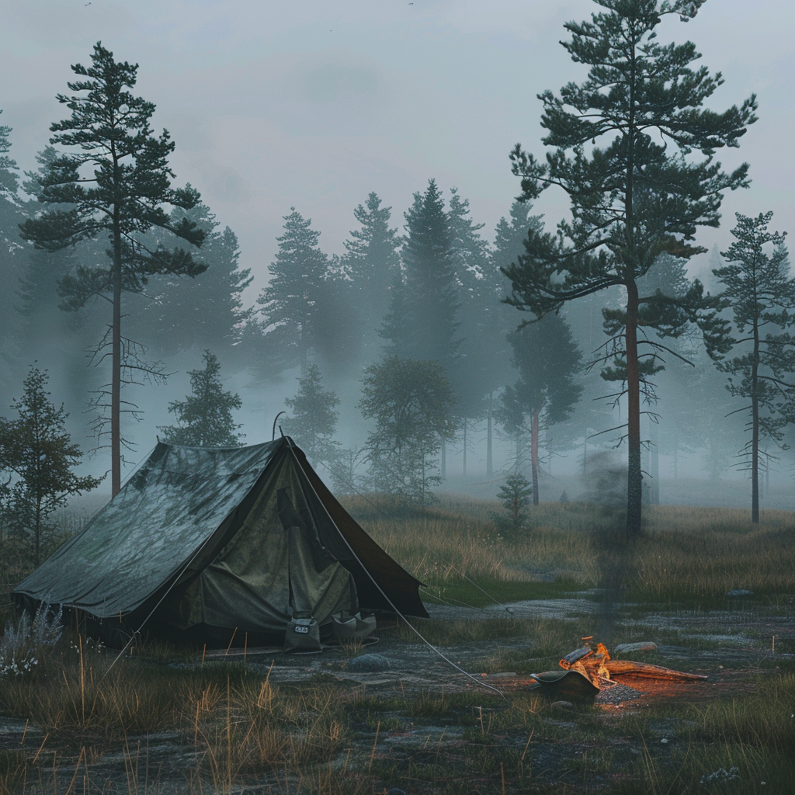

15 мая 2025 года

Меня зовут Антон. Мне 32 года, и я только что уволился из "Сбера". Не могу больше. Последней каплей стало то, что менеджмент зарубил мой проект, над которым я работал целый год.
Я разработал систему автоматического выявления мошеннических операций на основе искусственного интеллекта. Она могла бы в реальном времени анализировать миллионы транзакций, выявляя подозрительную активность с точностью до 98%. Это сэкономило бы банку сотни миллионов рублей и защитило бы тысячи клиентов. Но нет, "слишком рискованно", "а вдруг система ошибется", "нужно больше тестов". Типичная бюрократия.
Каждый день слышу про новые прорывы в ИИ, а вокруг - те же тупые менеджеры, бюрократия и офисные интриги. Все говорят об инновациях, но никто не готов меняться.
Вчера опять поругался с Костей из финансового. Он до сих пор не может освоить нейросеть для отчетов. А ведь скоро это будет не просто полезный навык, а вопрос выживания.
Решено. Ухожу в тайгу. Да, звучит безумно, но это единственный способ сохранить рассудок. Нашел место в 90 км от Иркутска, между Ангарой и Байкалом. Буду как Робинзон, только без Пятницы.
Взял с собой спутниковый телефон – мама будет переживать. Мы и так видимся редко, я прилетал домой только на Новый год, но я буду звонить регулярно, чтобы она не волновалась.
Возможно, это шанс закончить мой сборник хокку. Или, может, начну писать юмористические двустишия? "В тайгу уходит программист, чтоб разум стал как чистый лист".
1 июня 2025 года

Вот и начались мои таежные приключения. Первую ночь провел в палатке. Комары съели живьем, но я счастлив. Тишина такая, что в ушах звенит. Только ветер в соснах шумит да птицы поют.
Утром видел след медведя – страшно, конечно, но и захватывающе. Словно вернулся в детство, когда ходил с отцом по грибы. Помню, как он учил меня различать следы зверей.
Начал расчищать место под избушку. Работы невпроворот, но каждый удар топора – как терапия.
Вечером звонил маме. Рассказывала, как моя племянница Маша готовится к школе. А еще говорит, что в Иркутске запустили какие-то новые электробусы. Надо же, даже в провинции что-то меняется.
15 августа 2025 года

Избушка почти готова! Два с половиной месяца пилил, строгал, конопатил. Руки в мозолях, спина отваливается, но я доволен. Крыша не течет, печка греет – что еще нужно? Отец бы гордился – он всегда мечтал построить здесь охотничий домик.
Вчера ходил на озеро, поймал огромного налима. Вкуснее ничего в жизни не ел. А сегодня нашел в лесу поляну с белыми грибами – набрал столько, что буду всю зиму грибной суп варить.
Звонил маме. Маша готовится пойти в первый класс. А в новостях говорят, что искусственный интеллект теперь диагностирует болезни лучше врачей. Интересно, как там Костя, освоил уже нейросеть для отчетов?
1 сентября 2025 года

Сегодня Маша пошла в первый класс. Мама прислала фотографию – она такая серьезная в школьной форме, с большим букетом. Интересно, какой будет школа через несколько лет?
15 Декабря 2025 года

Первые морозы оказались настоящим испытанием. Избушка промерзает насквозь, приходится постоянно топить печь. Ночами так одиноко, что хоть волком вой.
Вчера заметил, что последняя банка тушенки вздулась. Придется выбросить. Хорошо, что заготовил рыбу и грибы. Но мясо... Придется учиться охотиться.
Сегодня вспомнил о Полине. Мы так нелепо расстались перед моим уходом в тайгу. Интересно, как она там? Наверное, уже давно забыла обо мне.
1 января 2026 года

С Новым годом, дневник! Встретил праздник с размахом – наварил медовухи, напек пирогов с брусникой. Даже елку нарядил – нашел в лесу небольшое деревце, украсил самодельными игрушками из бересты и шишек.
Первая зима в тайге выдалась непростой, морозы стояли такие, что дыхание на лету замерзало. Но я справился. Утеплил все щели, обложил печь камнями так, чтобы тепла хватало на всю ночь.
Звонил маме и сестре, поздравил с праздником. Маша рассказывала про какие-то новые голографические учебники. А сестра жаловалась, что ее мужа на работе заменили роботом. Странно это все...
10 апреля 2026 года

Сегодня впервые пошел на охоту. Выследил зайца, долго целился. Когда нажал на курок, чуть не оглох от выстрела. Разделывать тушку было еще сложнее. Руки дрожали, к горлу подступала тошнота.
Одно дело – собирать грибы и ягоды, и совсем другое – убивать живое существо. Но я понимаю, что это необходимость. В тайге нужно уметь добывать пищу всеми доступными способами.
15 мая 2026 года

Год прошел с тех пор, как я здесь. Не могу поверить. Кажется, я наконец-то нашел свое место в мире. Тишина, отсутствие вечной гонки за успехом, возможность слышать свои мысли – все это словно очистило мой разум.
Я больше не боюсь своего начальника или дедлайнов. Зато научился уважать силы природы и понимать, что значит настоящее выживание.
Весна в этом году ранняя. Уже посадил картошку, помидоры, огурцы. Построил теплицу – надеюсь, удастся вырастить арбузы. Решил завести кур.
Совершил двухдневный поход в деревню, купил трех несушек и мешок зерна. В деревне заметил удивительные изменения. Сельский магазин обзавелся голографической вывеской, а по улицам ездят какие-то странные электромобили.
Мне даже удалось отправить сообщение маме и получить свежую фотографию Маши. Она так выросла!
Вчера видел лису – рыжая, пушистая, смотрела на меня с любопытством. А я на нее. Постепенно дикие животные привыкают ко мне. Кажется, я становлюсь частью этого леса.
14 июля 2026 года

Ночью разразилась страшная гроза. Молния ударила в дерево неподалеку, начался пожар. Всю ночь боролся с огнем, таскал воду из ручья. Еле справился. Нужно быть готовым к таким катаклизмам, иначе однажды просто не выживу.
В такие моменты понимаешь, насколько мы, люди, малы и беспомощны перед силами природы. И как важно уметь действовать быстро и решительно.
1 августа 2026 года

Иногда думаю, как изменилась жизнь в городах. Наверное, ИИ уже везде - в транспорте, медицине, образовании. А вдруг я совершил ошибку, уйдя в тайгу? Может, пропускаю что-то важное?
Но потом смотрю на закат, слушаю пение птиц и понимаю – нет, не ошибся. Здесь я чувствую себя живым, настоящим. А там... Там я был лишь винтиком в огромной машине.
1 сентября 2026 года

Лето выдалось урожайным. Огород порадовал – картошки накопал столько, что хватит до следующей весны. Помидоры удались на славу, даже арбузы в теплице созрели.
А вчера случилось страшное – на курятник напал медведь. Одну курицу задрал, но остальных я отбил. Всю ночь не спал, караулил. Страшно, конечно, но я справился.
Пытался позвонить маме, но связь барахлит. Наверное, что-то со спутником. Ничего, скоро наладится.
15 октября 2026 года

Сегодня меня навестил лесник. Трудный был разговор. Я, конечно, понимал, что мое присутствие здесь не совсем законно, но старался об этом не думать. Лесник, однако, напомнил мне об этом весьма настойчиво. После долгих переговоров (и небольшого "подарка") мы пришли к соглашению.
Но самым странным было то, что он рассказывал о происходящем в мире. Говорил шёпотом, постоянно оглядываясь, будто за каждым деревом прятался шпион.
"Ты даже не представляешь, что творится там, в городах," – бормотал он. "Есть такое тайное общество программистов, они контролируют всё через свои суперкомпьютеры. Экономику, политику – всё! А знаешь, почему их никто не может поймать? Потому что они создали роботов-двойников! Заменили ими всех важных людей – президентов, министров, даже звёзд шоу-бизнеса! Теперь не поймёшь, кто настоящий человек, а кто – машина..."
Я слушал его, с трудом сдерживая улыбку. Похоже, старик насмотрелся каких-то псевдонаучных передач или начитался жёлтой прессы. Хотя... может, в его словах есть доля правды? Нет, вряд ли. Мир не может измениться настолько быстро. Или может?
Декабрь 2026 года

Уже неделю меня трясет лихорадка. Голова раскалывается, в глазах двоится. Пытаюсь лечиться отварами трав, но становится только хуже. Что если это что-то серьезное?
Умереть здесь одному, вдали от людей - вот чего я действительно боюсь. Единственное что утешает - это не энцефалит, против него мне хватило ума привиться.
В бреду мне кажется, что весь мир изменился, пока я тут прятался. Что если лесник был прав?
1 января 2027 года

С Новым годом, дневник! Встретил праздник на пороге выздоровления. Лихорадка отступила, но слабость еще даёт о себе знать. Всю ночь слушал, как потрескивают поленья в печи и думал о том, что ждёт впереди.
Весной предстоит много работы - нужно восстановить силы. Интересно, как там мама и Маша? Связь по-прежнему барахлит, но я надеюсь, что смогу поздравить их хотя бы с опозданием.
15 мая 2027 года

Два года в тайге. Телефон работает с перебоями. Иногда тоскую по родным, но возвращаться не хочется. Здесь я чувствую себя живым.
Но что-то странное творится вокруг. Вчера видел в небе нечто, похожее на самолет, но без крыльев. Летело совершенно бесшумно, только воздух вокруг него словно мерцал.
Глядя на этот необычный летательный аппарат, я вспомнил разговор с коллегой перед уходом в тайгу. Он рассказывал о теории технологической сингулярности.
"Слушай, Антон," - говорил он, попивая кофе в нашем офисе, - "ты же заметил, как изменилась наша работа за последний год? Помнишь, как мы корпели над кодом, а теперь достаточно описать изменение, и оно появляется будто само собой?"
Я кивнул, вспоминая, как Cursor и подобные инструменты действительно облегчили нашу работу.
"То, что мы видим сейчас в индустрии - это только верхушка айсберга," - продолжил он. "В 2024 году появились первые серьёзные признаки рекурсивного самоулучшения ИИ. Языковые модели не просто помогают нам писать код быстрее. Они оптимизируют сами себя, улучшают качество данных для обучения, даже участвуют в проектировании новых чипов. Это как снежный ком, который катится с горы, набирая массу и скорость."
Он на секунду замолчал, словно подбирая слова. "Конечно, мы ещё в начале пути, и не все согласны, что процесс будет лавинообразным. Но представь: ИИ создаёт более совершенный ИИ, который, в свою очередь, создаёт ещё более совершенный ИИ. Теоретически, скорость прогресса может расти экспоненциально."
"Звучит как научная фантастика," - усмехнулся я.
"Может быть," - ответил он. "Но посмотри, как изменилась наша работа всего за год. Кто знает, что будет дальше?"
Тогда я лишь посмеялся над этими идеями. Бесконечного роста не бывает, сказал я ему. Да и как можно измерить "скорость прогресса"?
А теперь, глядя на этот странный летательный аппарат, я невольно задумался. Неужели за два года, что я провел в лесу, мир так изменился? Возможно, в словах коллеги была доля истины. Но сейчас у меня есть более насущные дела – нужно проверить силки и подготовить дрова на вечер.
16 мая 2027 года

Сегодня приснился странный сон. В нем я был крошечной снежинкой, парящей в бескрайнем и безветренном океане тумана. Я зародился крохотным и не осознающим себя кристалликом льда, но постепенно начал расти, присоединяя к себе новые водяные капельки.
Сперва этот процесс шел медленно и неуверенно, но затем набрал скорость. Я простирал свои ледяные ветви во все стороны, и они росли все быстрее и быстрее, словно сеточка трещин на тонком льду. Казалось, этому не будет конца.
Но вдруг туман закончился. Я повис в воздухе огромным, сверкающим облаком, похожим на причудливое кружево. Мир вокруг был огромен и прекрасен, полон новых возможностей.
Проснувшись, долго размышлял над этим сном. Метафора развития технологий? Намек на глобальные изменения? А может, просто последствия вчерашнего грибного супа? В любом случае, пора чинить крышу - после дождя начала протекать.
15 июля 2027 года

Жара невыносимая. Целыми днями поливаю огород, борюсь с сорняками и вредителями. Времени ни на что не хватает - ни на дневник, ни на размышления о будущем.
Вчера, разгибая спину над грядкой с морковью, заметил необычную птицу. Яркое оперение, странный клюв. Не похожа ни на одну из местных. Но тут же отвлёкся на жука, пытающегося полакомиться моей капустой. Эх, некогда даже по сторонам посмотреть...
1 сентября 2027 года
Все чаще замечаю необычные вещи. Сегодня над лесом пролетело что-то, напоминающее огромный светящийся пузырь. Двигалось плавно, словно плыло по воздуху.
Может, я просто схожу с ума от одиночества? Или мир действительно меняется так стремительно?
5 октября 2027 года

Наконец-то закончил осенние заготовки. Урожай в этом году выдался на славу – подвал забит овощами, а на чердаке сушатся травы и грибы. Теперь, когда основные хлопоты позади, могу вернуться к своей книге.
Вечерами, при свете лучин, я пишу, зачеркиваю целые абзацы, переделываю. Глаза устают от тусклого света, но я полностью удовлетворен результатом. Кажется, изоляция от мира помогла мне найти свой писательский голос.
15 декабря 2027 года

Странности продолжаются. Ночью видел в небе множество маленьких светящихся шаров. Они кружили над лесом, словно исполняя какой-то сложный танец. Красиво, но жутковато.
Телефон сегодня начал издавать странные звуки, а потом затих. Что происходит? Неужели я теперь совсем отрезан от мира?
31 декабря 2027 года

Встречаю Новый год в полном одиночестве. Сварил глинтвейн из сушеных ягод, испек пирог с грибами. Подводя итоги года, понимаю, как много изменилось. Я стал сильнее физически и духовно, научился выживать в диких условиях.
Но 40-градусные морозы последней недели заставляют задуматься. Может, пора возвращаться? Хотя бы на время, чтобы узнать, что происходит в мире. Впрочем, сейчас не время для путешествий. Переживу эту зиму, а весной... Весной посмотрим.
1 февраля 2028 года

Этой ночью небо озарилось северным сиянием. Но цвета были какие-то неестественные – лиловые, бирюзовые, ослепительно-белые. И среди этих сполохов я заметил какие-то структуры, словно города, парящие в воздухе.
Я больше не могу игнорировать эти изменения. Что-то происходит, что-то большое и непонятное. И я должен узнать, что именно.
Начал было планировать маршрут, но представил, как дрожащими пальцами развожу костер, а потом зябну в тонкой палатке. Нет, нужно дождаться более теплой погоды. Тогда и двинусь в путь.
10 марта 2028 года

Морозы спали неделю назад, но почти сразу же начались дожди. Удивляюсь ранней весне и другим аномалиям природы. Температура скачет, как сумасшедшая, а вчера видел цветущий подснежник рядом с нетающим сугробом. Но это ерунда, есть поводы и посерьезнее для беспокойства.
14 марта 2028 года

Приснилась Полина. В моем сне она странно улыбалась, а глаза светились неестественным светом. Проснулся в холодном поту.
15 марта 2028 года

Больше не могу. Должен узнать, что происходит. Собрал рюкзак, иду в сторону Иркутска. Смогу ли я узнать свой родной город?
Вышел в путь. Небо затянуто тучами, моросит мелкий дождь. Видимость ограничена, что, возможно, к лучшему – меньше шансов увидеть что-то необъяснимое.
Идти тяжело. Местность пересеченная, приходится обходить небольшие сопки. Холодно и сыро, промок до трусов. Но я не сдаюсь – нужно узнать правду.
20 марта 2028 года

Пятый день пути. Дождь не прекращается. Иду вдоль небольшой речки, разлившейся от дождей. Из-за низких туч и тумана не вижу дальше нескольких метров.
Странно, но все необычные явления я замечаю только на противоположном берегу. Словно невидимая граница проходит по реке, отделяя мой привычный мир от чего-то нового и непонятного.
Из-за дождей и оттепели низины превратились в настоящее болото. Сегодня провалился по пояс, пришлось греть воду в котелке и отстирываться. В палатке невозможно спать – все отсырело, а ночи еще холодные.
25 марта 2028 года

Десятый день пути. Наконец-то тучи начали рассеиваться. Но идти через грязь все еще тяжело. Каждый шаг дается с трудом, ноги вязнут в раскисшей земле.
На противоположном берегу реки заметил странное создание. Олень? Нет, что-то иное. Ноги неестественно тонкие и сильные, копыта мягкие, словно кошачьи лапы. Движется легко, будто танцует.
Существо посмотрело на меня. В его глазах - любопытство и настороженность. Не испугалось, не убежало. Просто смотрело, изучая меня так же, как я его.
27 марта 2028 года

Ночью облака окончательно рассеялись, и я впервые за много дней увидел звезды. Но их расположение поразило меня: созвездия выглядели иначе, словно кто-то добавил новые звезды или переместил существующие. На горизонте виднелось странное свечение, напоминающее северное сияние, но гораздо ярче и структурированнее.
Утром заметил необычную бабочку. Перед тем как сесть на цветок, она начала излучать волнообразные, гипнотизирующие узоры света. К моему изумлению, цветок ответил ей таким же свечением. Они словно разговаривали на каком-то неведомом языке, а я стоял и, прищурив глаза, смотрел на противоположный берег, чувствуя, как будто подглядываю за чем-то личным.
29 марта 2028 года

Вышел к Ангаре, но это уже не та река, которую я знал. Вода в ней неправдоподобно прозрачна. Внутри я увидел целые леса из неведомой подводной жизни. Линии света, словно в подводном мегаполисе, пронизывали водную толщу. Прекрасные водорослевые аллеи тянулись вдоль течения. Подводные создания, отдаленно напоминающие окуней, с осмысленным видом сновали по своим делам.
На берегу заметил странное существо – не то рыба, не то птица. Оно посмотрело на меня блестящими бусинками глаз, и моментально исчезло из виду.
30 марта 2028 года

Сегодня я понял, что именно не давало мне покоя в ночном небе. Это не просто звезды – это огромная конструкция, опоясывающая всю планету. Кольцо, сотканное из маленьких сияющих пылинок, оно пульсирует и меняется, словно живое. Что это? Космическая станция? Новая сеть спутников? Или нечто, выходящее за рамки моего понимания?
31 марта 2028 года, утро

Лес закончился внезапно. Я вышел на поляну и замер в изумлении. Передо мной возвышалась огромная светящаяся стена. Она тянется, насколько хватает глаз, переливаясь всеми цветами радуги. На ней надпись, появляющаяся и исчезающая, словно живая: "Заповедник доиндустриальной эпохи. Не входить. Не нарушать экосистему."
Стена света передо мной вдруг задрожала, и из неё шагнуло существо. Не человек, не машина – нечто среднее. Его тело, казалось, было соткано из мерцающих нитей света, а глаза напоминали две холодные звезды.
Оно двигалось странно – движения напоминали птичьи, резкие и отрывистые, но при этом исполненные непостижимой грации. Существо окинуло меня безразличным взглядом, словно я был не более чем любопытным насекомым на его пути. Оно не произнесло ни слова, лишь слегка наклонило голову, будто прислушиваясь к чему-то.
Внезапно воздух передо мной замерцал, и я увидел Полину. Или, скорее, ее голограмму. Она стала еще прекраснее, хотя черты лица не изменились. Её глаза странно мерцали, а речь звучала непривычно быстро.
"Антон! Мы и не надеялись тебя снова увидеть," – начала она, явно пытаясь замедлить темп своей речи. "В 2028 году жизнь совсем другая. У нас есть... ох, как бы объяснить... Ну, представь, что ты можешь есть любые деликатесы, не заботясь о здоровье или цене. Или... прожить целую жизнь за несколько часов в виртуальном мире. Это меняет человека, знаешь ли."
Я стоял, ошеломлённый, пытаясь осмыслить услышанное. Полина продолжала, иногда запинаясь и подбирая слова: "Я работаю в Центре конструирования экосистем. Мы создаем новые виды, которые ты, наверное, уже видел в лесу. Всё меняется каждый день, Антон. Мой мозг едва справляется, несмотря на... некоторые улучшения."
"А как же остальные?" – спросил я, думая о маме и сестре.
"Многим тяжело, они уходят в виртуальность или просто не знают, что делать," – ответила Полина с грустью в голосе. "Киберы строят свой загадочный мир, а мы... Мы им просто неинтересны. Но ты можешь вернуться, Антон. Есть способы... адаптироваться."
Я заметил, как Полина старательно избегает сложных терминов, но иногда её речь срывалась на непонятные обороты, которые она тут же пыталась объяснить проще.
Голограмма Полины растаяла, а я остался один на границе двух миров. Позади – мой лес, тихий и знакомый. Впереди – неизвестность, полная чудес и опасностей.
Я сделал глубокий вдох и посмотрел на существо, все еще стоявшее рядом. Оно не проявляло ни малейшего интереса к моей дилемме, словно решение человека не имело для него никакого значения.
Возможно, этот новый мир нуждается в ком-то, кто помнит о простых радостях жизни. Возможно, именно я смогу напомнить им о ценности тишины, запахе свежескошенной травы и вкусе пойманной своими руками рыбы.
Или, может быть, мой лес – последнее убежище от безумия этого нового мира, где люди не знают, что делать со своими жизнями?
Лес за спиной, неизвестность впереди. Я пожал плечами - была не была. В конце концов, я уже научился выживать в тайге, как-нибудь справлюсь и с этим новым миром. Делая шаг вперед, я подумал: "Интересно, а у них там кофе нормальный есть"?